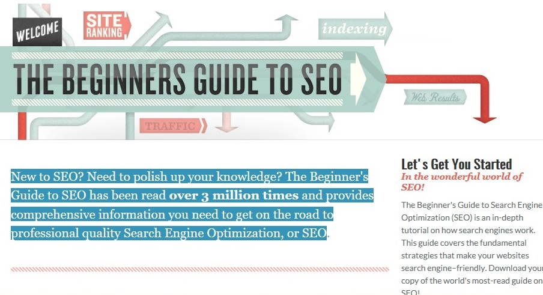

SEO
1. Previewing pages Notice that when you use your mouse to point at a particular search result, called aresult block, a small, sideways chevron appears next to it (). Clicking on that chevron allows you to preview a document, letting you determine what kind of document is behind the link. It can help you decide whether that link meets your needs, and whether you want to visit the page. These previews, in combination with skimming results, can help you get a quick grounding in a subject.
2. Understanding an individual search result Result blocks on a search results page consist of three major elements: Title: The blue link in the top line gives you the topic of the page. Web address/URL: The second line contains a green link which tells you location of the document on the web. This line can help you determine the source of the information. Snippet: This last two lines, the black text, show you some of the places where your search terms appear on the page, embedded in the text in which they appear. A snippet is not a complete summary of the text on a page; it is only search terms in context, extracted from the document. Ellipses: In some snippets you see an ellipsis (...). Be careful about how you interpret the ellipsis. Text that is taken out and replaced by the ellipses could be critical to answering your question.
SEO is short for search engine optimization. Search engine optimization is a methodology of strategies, techniques and tactics used to increase the amount of visitors to a website by obtaining a high-ranking placement in the search results page of a search engine (SERP) — including Google, Bing, Yahoo and other search engines.
3. Using an entire results page Not only is it helpful to know how to understand a single result, but you can gain a lot from taking a moment to look over an entire screen or page full of results.
How SEO affects business?
Increase your website's visibility on search engines like Google and Bing and attract the right kind of traffic to the right pages on your site. Learn about search engine optimization including how to read a results page, find your ranking, and see how rankings affect businesses large and small.
sOURCES
We all love to explore the work of others.So , we have provided some with different authors to that defines how SEO works included here are what's most important to you.

SEO - search engine optimization BY MOZ.COM
New to SEO? Need to polish up your knowledge? The Beginner's Guide to SEO has been read over 3 million times and provides comprehensive information you need to get on the road to professional quality Search Engine Optimization, or SEO Some of the most important elements for search engine optimization happen on your .... Thanks for this Kristi, it's great to read some clear guidelines
Learn more
SEO: What It Is and How It Affects Your Business by VERSIQUE
In this day and age most modern business owners, and certainly the majority of marketers, are aware of what SEO is and their need for it. However, if you still wonder what SEO is and why you should invest in it, you’ve come to the right place.
Learn more